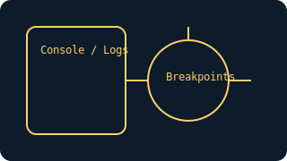

C# 上手指南（.NET）
基础语法、项目结构、异步与 LINQ、常见问题与实践。跟着本文从入门到能做项目。
给完全新手：第一步怎么做
- 安装 .NET SDK，运行
dotnet --info查看版本。 - 新建控制台项目：
dotnet new console -n HelloApp。 - 在
Program.cs打印 Hello，并尝试Task.Delay。 - 用 VS Code 或 VS 开启断点，观察变量变化。
- 理解
dotnet run与dotnet build的区别。
安装与环境
- .NET SDK：使用
dotnet命令，新建项目dotnet new console。 - IDE：VS Code + C# 扩展 或 Visual Studio Community。
基础语法
// 记录与不可变
public record User(string Name, int Age);
// 模式匹配
static string Classify(object o) => o switch {
int n when n > 0 => "positive",
string s => $"str:{s}",
_ => "unknown"
};
// 异步
static async Task<string> FetchAsync(string url){
using var http = new HttpClient();
return await http.GetStringAsync(url);
}
常见坑
- 异步死锁：UI 环境避免
.Result/.Wait()，使用await。 - 可空用法：启用
nullable，合理使用?与!。 - 资源释放：优先
using与IAsyncDisposable。
练习题（基础）
- 实现一个 CLI 下载器，支持断点续传与取消。
- 编写一个 LINQ 查询管道，对对象列表做聚合。
- 创建一个 ASP.NET Minimal API，返回 JSON 列表。
项目实战（入门）
- 命令行工具：读取文本统计词频，支持参数与帮助。
- Web API：最小 API 返回
/ping，用HttpClient调用。 - 文件处理：遍历目录、重命名、日志记录，支持回滚。
中段插图
扩展内容
- 并发与异步：
Task/ValueTask，通道与数据流。 - 工程化：
StyleCop/FxCop、BenchmarkDotNet与 CI。 - Web 框架：ASP.NET 路由、中间件与依赖注入。
更多练习
- 实现一个带限流与重试的
HttpClient封装。 - 写一个结构化日志器，支持 JSON 输出与按时间切割。
- 搭建一个分页查询的 REST API，包含错误处理。
国内网络建议
- NuGet 国内镜像：
dotnet nuget add source添加镜像源。 - 遇到网络受限：优先使用本地“国内模式”与代理下载。
- 部署：使用
dotnet publish -r win-x64 --self-contained生成可执行文件分发。
参考资源
- C# 官方文档（语言与库参考）。
- .NET 官方文档（运行时、SDK 与生态）。
- ASP.NET Core 文档（Web/服务端框架）。
系统学习路径
- 语言基础与面向对象：类型系统、泛型、LINQ、异步与内存模型。
- 工程与测试：项目结构、DI、xUnit/NUnit、日志与配置管理。
- Web 与持久化：ASP.NET Core、EF Core、容器化与部署流水线。
进阶项目
- 模块化后端：分层/DDD、Repository、统一异常与响应格式。
- 高并发 API：异步 I/O、连接池与缓存、指标与可观测性。
- 多租户 SaaS：租户隔离、计费与审核、后台与运维工具。
理论与论文到代码索引（C#/.NET）
- Raft（概念）；.NET 可实现集群模拟与日志复制。
- LSM-Tree（概念）；可使用 .NET 的 I/O 库进行工程实现。